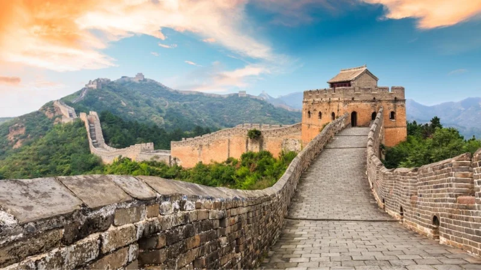
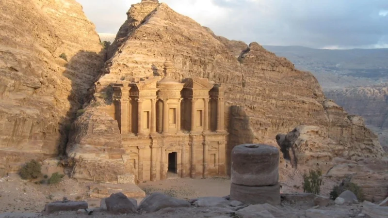
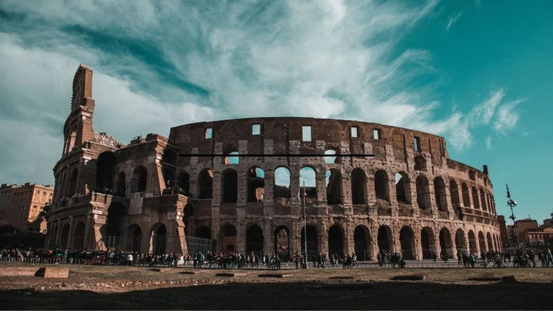
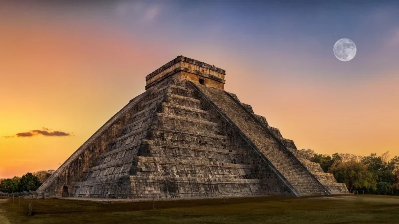
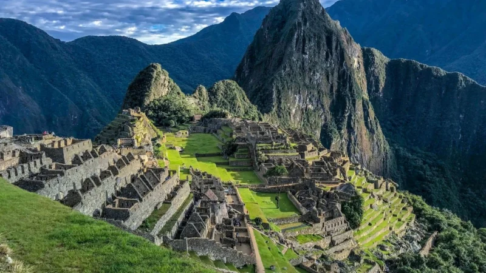
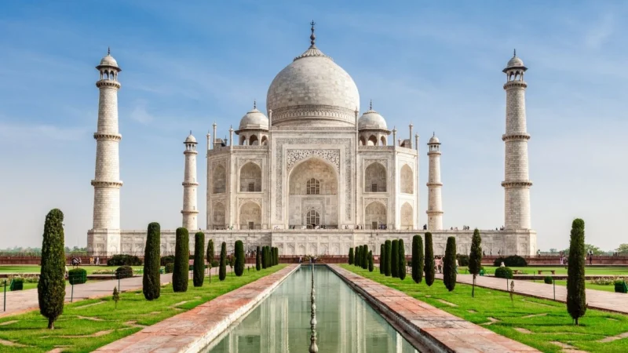
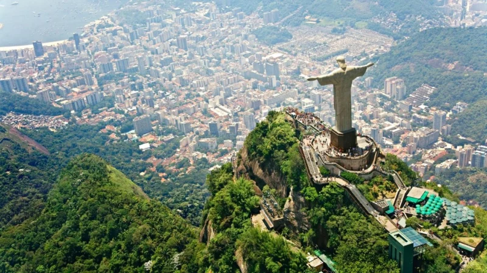

La Gran Muralla China - China
Es la obra arquitectónica más importante de China, y más que una muralla, es un conjunto
de construcciones que sirvieron de defensa ante los invasores mongoles.
En su momento de máximo apogeo, llegó a medir más de 20.000 kilómetros, e iba desde la
frontera con Corea, hasta el Desierto del Gobi, bordeando la frontera con Mongolia.
Para su construcción, se necesitaron cientos de miles de obreros, que cuando
morían, se enterraban en sus inmediaciones.

Petra - Jordania
Se construyó sobre la capital del Reino Nabateo, que fue punto de paso de la Ruta de
la Seda. Las modificaciones del recorrido de esta ruta, hicieron que la ciudad de Petra
fuera abandonada paulatinamente.
Años después fue redescubierta y hoy es una de las imágenes icónicas del mundo, con sus
1.500 metros de largo.

El Coliseo - Italia
Es el circo más grande de todos los que se construyeron y en él se organizaron
luchas de gladiadores durante más de 500 años. Su capacidad era de más de 50.000 espectadores.

Chichen Itza - México
Su nombre significa en lengua maya, boca del pozo de los Itzaes,
haciendo referencia al cenote sagrado que hacía de entrada al inframundo.
En este templo, se veneraba a Chaac, el Dios de la lluvia, aunque sirvió
como templo para el dios Kukultán.

Machu Picchu - Perú
Fue redescubierto oficialmente por Hiram
Bingham, pero muchas familias de la zona ya entraban antes, sin saber la importancia
que tenían dichas ruinas.
Se encuentra entre la montaña Huayna Picchu y la montaña Machu Picchu,
a unos 2.500 metros sobre el nivel del mar. Es una construcción de estilo clásico Inca, que
los arqueólogos relacionan con una finca pensada para albergar al emperador inca Pachacuti.

Taj Mahal - India
Aunque es uno de los edificios más bonitos del mundo, la realidad es que se construyó
como una tumba para Arjumad Bano Begum, más conocida como Mumtaz Mahal. Su esposo, Shah Jahan,
mandó construir el mausoleo para recordar a su mujer.
Años después, cuando el emperador murió, fue enterrado junto a su esposa. Pero antes, justo
cuando se terminó el edificio, cuenta la leyenda que el emperador mandó a todos los obreros
que habían trabajado en su construcción, cortarse las manos, con el objetivo de que nunca se construyera
algo de semejante belleza.
La tumba es la pieza central de un complejo de 42 acres que incluye una mezquita
y una casa de huéspedes además de los jardines.

El Cristo Redentor - Brasil
Es una estatua construida en el año 1931 que tiene más de 30 metros de
altura. Es la gran imagen de las postales de Río de Janeiro.
Es un diseño de Art Decó que corona la montaña de Corcovado y representa
el cuerpo de Jesús de Nazaret.

En conclusión, las Siete Maravillas del Mundo Moderno no solo son hitos arquitectónicos
notables, sino también símbolos duraderos de la creatividad y el ingenio humano. Estas estructuras
continúan inspirando admiración y asombro, recordándonos la capacidad extraordinaria de la humanidad
para dejar una marca indeleble en la historia a través de la construcción de monumentos grandiosos
y significativos.